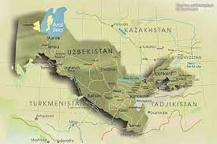
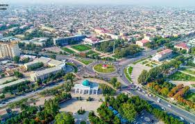
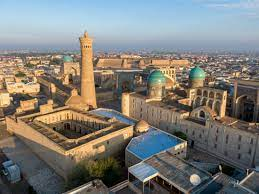
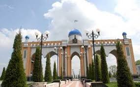

Uzbekistan |
|
| Uzbekistan |
Ozbekiston Respublikasi
|
| Toshkent | |
| Toshkent viloyati | |
| Andijon | |
| Buxoro | |
| Fargona | |
| Jizax | |
| Xorazm | |
| Namangan | |
| Navoiy | |
| Qashqadaryo | |
| Samarqand | |
| Sirdaryo | |
| Surxandaryo | |
| Oxiriga | |
ToshkentToshkent Oʻzbekistonning poytaxti va eng yirik shahri boʻlib, aholisi boʻyicha Markaziy Osiyodagi eng yirik qadimiy shaharlardan biri hisoblanadi. Oʻzbekistonning shimoli-sharqiy qismida, Qozogʻiston bilan chegaraga yaqin qismda joylashgan boʻlib, maydoni 334,8 km2 (129.3 2) ni tashkil etadi. 2021-yilgi maʼlumotlarga koʻra, Toshkent aholisi 2 694 400 nafar kishini (Oʻzbekiston aholisining qariyb 8 foizi) tashkil etadi[1]. 2018-yilgi maʼlumotlarga koʻra, Toshkent shahrining YIMi $2,74 milliardni tashkil etadi va bu koʻrsatkich Oʻzbekistondagi eng katta YIMga ega shahar boʻlib kelmoqda[4][5]. Milodiy VIII asr oʻrtalarida islomiy taʼsir boshlangunga qadar, Toshkentga sugʻd va turkiy madaniyat taʼsir koʻrsatgan. 1219-yilda Chingizxon Toshkentni vayron qilganidan soʻng, shahar qayta tiklandi va Buyuk Ipak yoʻlidan foyda koʻrdi. 1630-yildan 1729-yilgacha Toshkent shahri Qozoq xonligining rasmiy poytaxti boʻlgan. XVIII—XIX asrlardan boshlab ushbu shahar Qoʻqon xonligi tomonidan zabt etilgunga qadar, mustaqil shahar-davlatga aylangan edi. 1865-yilda Toshkent Rossiya imperiyasi tarkibiga kirdi hamda Turkiston general-gubernatorligi markazi boʻldi. Sovet davrida bu shahar butun Sovet Ittifoqining majburiy deportatsiyasi tufayli katta oʻsish va demografik oʻzgarishlarga guvoh boʻlgan. 1966-yilda boʻlgan Toshkent zilzilasi tufayli Toshkentning katta qismi vayron boʻlgan edi, biroq u namunali Sovet shahri oʻlaroq qayta qurilgan. Oʻsha paytda Toshkent Sovet Ittifoqining Moskva, Leningrad va Kiyev shaharlaridan keyin turadigan toʻrtinchi yirik shahar boʻlgan[6]. Hozirgi kunda, mustaqil Oʻzbekiston poytaxti sifatida, Toshkentda koʻp millatli aholi saqlanib qolgan, ular orasida etnik oʻzbeklar va qozoqlar koʻpchilikni tashkil qiladi. 2009-yilda Toshkentning 2 200 yilligi nishonlandi. Bu munosabat bilan shahar infra va transport tizimi yangilandi[7][8].

Toshkent viloyatiToshkent viloyati — Oʻzbekiston Respublikasi tarkibidagi viloyat. Respublikaning shimoli-sharqida. 1938-yil 15-yanvarda tashkil kilingan. Shimoliy va shimoli-gʻarbdan Qozogʻiston Respublikasi, shimoli-sharqdan Qirgʻiziston Respublikasi, sharqdan Namangan viloyati, janubidan Tojikiston Respublikasi, janubi-gʻarbdan Sirdaryo viloyati bilan chegaradosh. Maydoni (Toshkent shahri maydonisiz) 15,3 ming km². Aholisi (Toshkent shahri aholisisiz) 2.931 million kishidan ziyod (2022). Viloyat tarkibida 15 ta tuman (Bekobod, Boʻka, Boʻstonliq, Zangiota, Oqqoʻrgʻon, Ohangaron, Parkent, Piskent, Chinoz, Yuqori Chirchiq, Yangiyoʻl, Oʻrta Chirchiq, Qibray , Quyi Chirchiq), 17 shahar (Angren, Bekobod, Boʻka, Doʻstobod, Keles, Olmaliq, Oqqoʻrgʻon, Ohangaron, Parkent, Piskent, Toshkent, Toʻytepa, Chinoz, Chirchiq, Yangiyoʻl, Yangiobod, Gʻazalkent), 18 shaharcha (Alimkent, Boʻzsuv, Gulbahor, Zafar, Iskandar, Krasnogorsk, Nurobod, Olmazor, Salor, Tuyaboʻgʻiz, Chigʻiriq, Chorvoq, Eshonguzar, Yangibozor, Yangi chinoz, Yangihayot, Oʻrtaovul, Qibray), 146 qishloq fuqarolari yigʻini bor. Markazi — Nurafshon shahri.
AndijonAndijon Oʻzbekistonning Andijon viloyatidagi shahardir. Viloyatning maʼmuriy, iqtisodiy va madaniy markazi. Oʻzbekistonning yirik industrial shaharlaridan biri. Shahar Fargʻona vodiysining sharqida. Andijonsoy yoqasida, dengiz sathidan 450 m balandlikda joylashgan. Iyulning oʻrtacha harorati 27 °C — 28 °C, yanvarniki — 3 °C. Aholisi 333,4 ming kishi (2000). Maydoni 74,3 km2. Andijon shahri shimoli-gʻarbdan Oltinkoʻl tumani, gʻarbdan Buloqboshi tumani va janubi-sharqdan Andijon tumani bilan chegaradosh.Shahar toponomiyasi haqida turli tadqiqodlar, har xil fikrlarni ilgari suradilar. Masalan, ba'zi manbalarda bu nom "andi", "azoq" uruğlari nomidan olingan deyiladi. Ammo, hozirgi kunda köplab olimlar yakdil fikrga kelishdi. Unga köra, "Andijon" nomi söğdcha "adoq", ya'ni "yakun", "oxir" va "kon" - "ariq", "soy" sözlarining birlashuvidan kelib chiqqan. Ya'nikim "Adoqkon" degani "Soyning oxirida joylashgan yer" ma'nosini anglatadi. Bu faraz hozirda öz tasdiğini topmoqda. Bilamizki, Andijon shahri Andijonsoy yoqasida, qadimgi Oqböyra soyi oxirida joylashgan.
BuxoroBuxoro — Oʻzbekiston Respublikasining qadimiy shaharlaridan biri, Buxoro viloyatining maʼmuriy, iqtisodiy va madaniy markazi. Buyuk ipаk yoʻlida yirik tijorat markazlaridan boʻlgan. Oʻzbekistonning janubiy-gʻarbida, Zarafshon daryosi quyi oqimida joylashgan. Toshkentdan 616 km. Buxoro 2 ta shahar rayoni (Fayzulla Xoʻjayev va Toʻqimachilik)ga boʻlingan. Aholisi 280000 (2019).Nomlanishi va etimologiyasi Buxoro shahri qadim zamonlarda qanday nomlangani — nomaʼlum. Milodiy V asrga oid xitoy manbalarida Buxoro shahri Nyumi tarzida tilga olinib oʻtilgan. Binobarin, shaharda shu nomdagi mulk hukmdorining qarorgohi ham boʻlgan. Tan imperiyasining VII asrga oid solnomalarida Buxoro shahri An (Ango), Ansi, Buxo (Buxe, Fuxo) shakllarida qayd etib oʻtilgan. Keyinchalik shahar har xil nomlana boshladi. Arab qadimiy manbalarda u Bumiskat, Madinat us-sufriya (Mis shahar), Numijkat (soʻgʻdcha numij yoki namich degani mashhur degan maʼnoni anglatgan) tarzida keltirilgan. Qadimiy zamonlarda yashagan mahalliy mualliflarning fikricha, shaharning nomi Buxor, yaʼni „Sanamlar turgan ibodatxona“ maʼnosini anglatuvchi bir soʻzdan kelib chiqqan.
FargonaFargʻona (1907-yilgacha — Yangi Margʻilon; 1907—1924-yillarda Skobelev, mahalliy talaffuzda — Iskobil deb atalgan. Podsho Rossiyasining Oʻrta Osiyoni bosib olishda va keyingi yillarda koʻplab qirgʻinbarotlar uyushtirgan generali M.D. Skobelev nomiga qoʻyilgan) — Fargʻona viloyatining maʼmuriy, iktisodiy va madaniy markazi, respublikaning yirik shaharlaridan biri. Maydoni 0,09 ming km². Aholisi 222,4 ming kishi (2004, Fargʻona vodiysidagi shaharlar ichida aholi soni boʻyicha 3-oʻrinda). Shahar Fargʻona vodiysining jan. qismida, Olay togʻlarining etagida, 580 m balandlikda joylashgan. Iklimi kontinental. Oʻrtacha yillik temperatura 13°. Yanvarning oʻrtacha tempaturasi —2,7°, iyulniki 26,4°. Eng past temperatura 27°, eng yuqori temperatura 42°. Yiliga 192 mm yogʻin tushadi. Yogʻinning koʻp qismi qish va bahor fasllarida yogʻadi. Gʻarbdan baʼzan qattiq shamol va garmsel, Olay togʻi (Shohimardonsoy vodiysi)dan togʻvodiy shamoli esadi.